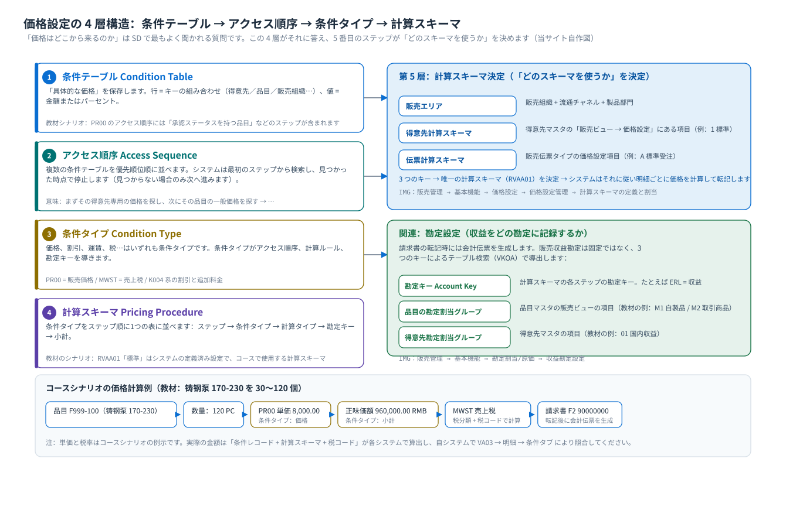
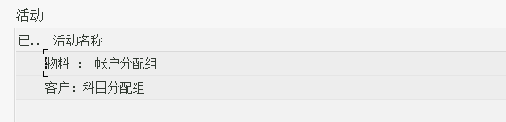

価格設定：条件技術の 4 層構造
条件テーブル · アクセス順序 · 条件タイプ · 計算スキーマ · 計算スキーマ決定 · 勘定設定
1. ひとこと
価格は「入力」するものではなく「検索」されるもの
伝票入力時に価格を入力していなくても、受注伝票には価格が入っています。システムが設定された順序で条件レコードを検索するからです。「誰が調べるか、どの順序で調べるか、どの行が検索結果か」をはっきりさせれば、価格設定の問題はすべて特定できます。
2. 価格設定の 4 層構造（構造図）
{kind=link}

2. 4 つの概念を 1 枚の図で理解
| 階層 | とは | 教材で対応するもの | たとえて言うと |
|---|---|---|---|
| 条件テーブル Condition Table | 価格を格納するテーブルで、項目は「価格検索に使うキー」です | PR00 のアクセス順序には「承認ステータスを持つ品目」などのステップが含まれる | Excel の価格表（得意先 + 品目 → 価格） |
| アクセス順序 Access Sequence | 優先順位順に並べた複数の条件テーブル | PR00 のアクセス順序：まず誰の価格を探し、見つからなければ次に誰の価格を探すか | 資料を調べる順序：まず専用の一覧を調べ、なければ総表を調べる |
| 条件タイプ Condition Type | 価格・割引・税の一種で、計算ルールと勘定キーを持ちます | PR00 販売価格 / MWST 売上税 | 価格の「カテゴリ」：単価、割引、運賃、税 |
| 計算スキーマ Pricing Procedure | 条件タイプをステップ順に1つの表に並べる。計算タイプと小計を含む | 教材はシステムの定義済み設定である RVAA01「標準」を使用 | 計算表：ステップ 10 単価、ステップ 20 割引、ステップ 30 税… |
重要な詳細：計算スキーマ内の「勘定キー」計算スキーマの各ステップには条件タイプのほかに勘定キー（Account Key）があり、たとえば
ERLは収益を表します。請求書の転記時、システムは「勘定キー＋品目の勘定割当グループ＋得意先の勘定割当グループ」で収益勘定を検索します。したがって計算スキーマは価格計算だけでなく、記帳も担います。IMG パス（計算スキーマの定義と割当 / 得意先と伝票の計算スキーマ）販売管理 → 基本機能 → 価格設定 → 価格設定管理 → 計算スキーマの定義と割当
原教材の中国語パス
销售和分销 → 基本功能 → 定价 → 定价控制 → 定义并分配定价过程

3. 計算スキーマ決定：「どのスキーマを使うか」を決める
システムが勘でスキーマを選ぶことはありません。3 つのキーを使って 1 つのテーブルを検索します（IMG：計算スキーマの定義と割当 → 計算スキーマ決定）：
| 決定キー | どこから来るか | 教材のシナリオ |
|---|---|---|
| 販売エリア | 販売組織 + 流通チャネル + 製品部門 | 計 4 つの販売エリアを個別に指定できます |
| 得意先計算スキーマ Customer Pricing Procedure | 得意先マスタ → 販売ビュー → 価格設定 | 教材は標準値を使用 |
| 伝票計算スキーマ Document Pricing Procedure | 販売伝票タイプの価格設定項目 | 受注タイプ OR に対応する値 |
トラブルシューティングの考え方価格が合わないときはまず 3 点を確認します：① 受注伝票ヘッダ/明細の販売エリアが正しいか；② 得意先の「得意先計算スキーマ」項目に値があるか；③ 伝票タイプの「伝票計算スキーマ」に値があるか。3 つのキーの組み合わせでスキーマが見つからないと、価格が空になるか、不完全のメッセージが出ます。
4. 税と勘定設定
| やるべきこと | 対象の設定 | 教材タスク |
|---|---|---|
| 税決定ルールの定義 | IMG：販売管理 → 基本機能 → 税 → 税決定ルールの定義 | タスク 27 |
| 得意先税分類と品目税分類の定義 | IMG：販売管理 → 基本機能 → 税 → 主レコードデータ関連性の定義 | タスク 28 |
| 売上税率を登録 | VK11 → 条件タイプ MWST | タスク 36 |
| 品目の勘定割当グループの定義 | IMG：販売管理 → 基本機能 → 勘定割当/原価 → 収益勘定設定 → 勘定割当の関連マスタデータのチェック（教材の例：M1 自製品 / M2 取引商品） | タスク 29 |
| 売上収益の総勘定元帳勘定を登録 | IMG：… → 収益勘定設定 → 総勘定元帳勘定の割当 | タスク 30 |
教材の考え方は明快です：品目だけで収益勘定を分ける（自製品 / 取引商品の 2 種類）、得意先の勘定割当グループも決定に関与しますが、このシナリオでは作用しません。これは「勘定設定」を理解するための最小の例です：まず「どのキーを使うか」を決め、次に「キーの値の組み合わせ → 勘定」を決めます。
{kind=link}

5. 価格計算のプロセスを一度たどる（コースシナリオ）
| ステップ | システムが行うこと | どこを見るか |
|---|---|---|
| ① 品目 + 数量の入力 | 販売単位、明細カテゴリ、プラントを引き継ぐ | 受注明細行 |
| ② 計算スキーマの決定 | 販売エリア + 得意先計算スキーマ + 伝票計算スキーマ → RVAA01 | IMG 計算スキーマ決定 |
| ③ 明細ごとに条件を取り込む | 計算スキーマのステップに従い、各条件タイプはアクセス順序に従って条件レコードを検索 | 明細 → 条件タブ |
| ④ 正味価額の計算 | 単価 × 数量 − 割引 ＋ 追加料金 ＝ 正味価額 | 条件タブの小計行 |
| ⑤ 税の計算 | 得意先税分類 + 品目税分類 → 税コード → 売上税 | 条件タブの MWST 行 |
| ⑥ 保存後に追跡可能 | 価格は受注伝票に書き込まれ、後から照会・再価格設定ができます | VA03 / VA05 |
コースシナリオの数値（教材の画面より）教材の見積/受注シナリオは「铸钢泵 170-230 を 30 件」。後続の納入・請求画面には 120 PC と表示され、正味価額 960,000.00 RMB、請求書
F2 90000000、請求書日付 2021.04.15、支払先 10000000。VK11 の PR00 の条件レコードは8,000.00 RMB／PC、有効期間 2021.01.01 – 9999.04.14 です。これらは教材環境の実際の数値で、標準値ではありません——皆さんのシステムでは単価と税率が必ず異なります。重要なのは「数値がどう計算されるか」（8,000 × 120 = 960,000）を理解することです。6. 価格設定のトラブルシューティング一覧（発生確率の高い順）
- 価格行がない：条件レコードが存在しない / 期限切れ / キー不一致（販売エリア、得意先、品目が一致しない）。まず
VK13で条件タイプごとにレコードがあるか照会します。 - 価格行はあるが金額が違う：アクセス順序で別のレコードが見つかっています（例えば得意先専用価格が一般価格より優先される）。
VA03の条件タブで、その明細の「出所」と「条件レコード番号」を確認します。 - 条件レコードを変更しても既存の伝票は変わらない：伝票はスナップショットです。反映させるには伝票内で手動で再価格設定するか、伝票を新規作成します。
- 税が 0：得意先の税分類または品目の税分類が欠落/不一致、あるいは
MWSTの条件レコードが欠落している。 - 価格設定タイプが不完全というメッセージ：計算スキーマに「必須」とマークされた条件タイプが欠けています（例えば税分類が未登録だと不完全性のメッセージが出ます）。
7. セルフチェック
| 確認すべきこと | どう確認するか |
|---|---|
| この受注伝票で使われている計算スキーマはどれか | VA03 → ヘッダ → 条件/価格設定の関連項目；または V/08 で決定テーブルを確認 |
| ある条件タイプのアクセス順序 | カスタマイジング：販売管理 → 基本機能 → 価格設定 → 条件タイプ → 条件タイプの定義（アクセス順序をダブルクリック） |
| 条件レコード明細 | VK13 で条件タイプとキーを入力；テーブル KONP（条件金額）/ KONH（条件ヘッダ） |
| 受注伝票で実際に使われた条件値 | VA03 → 明細 → 条件タブ；テーブル KONV（伝票条件） |